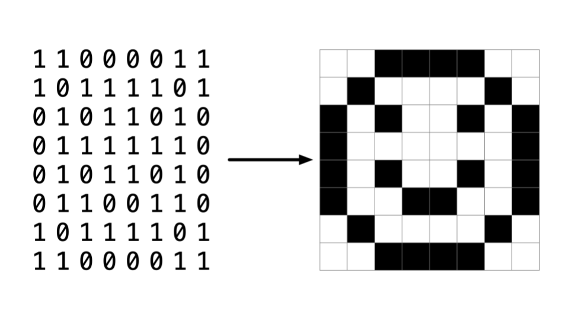
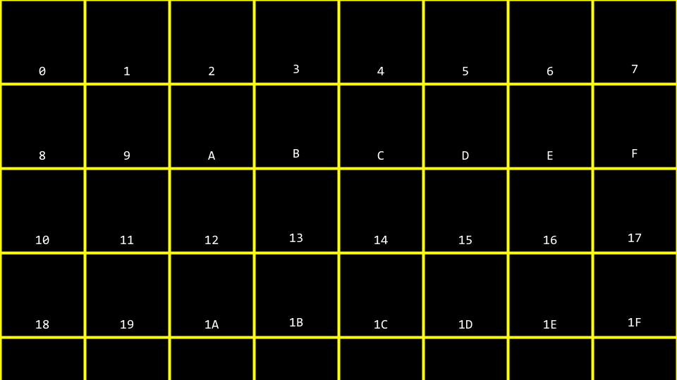
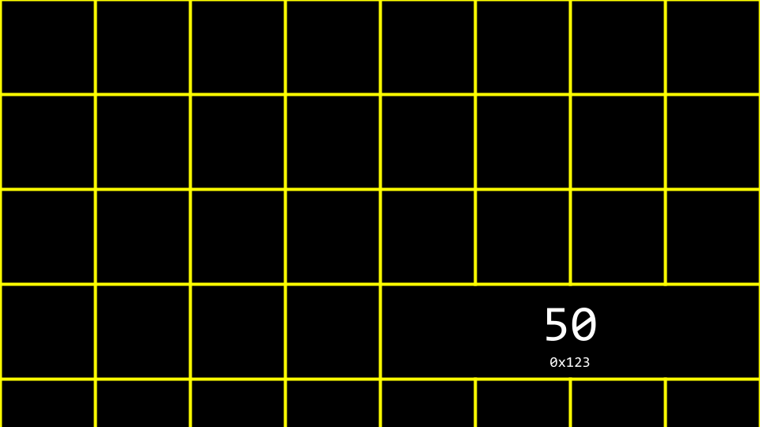
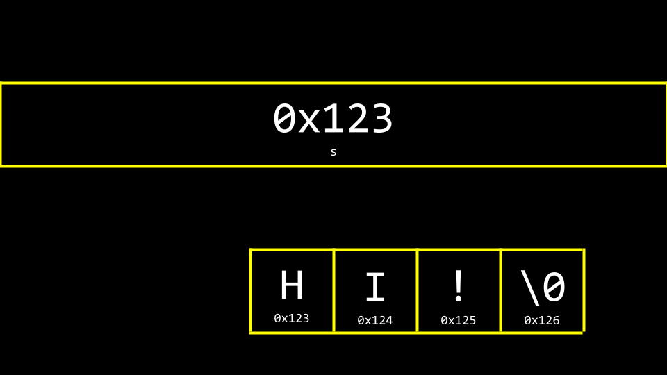
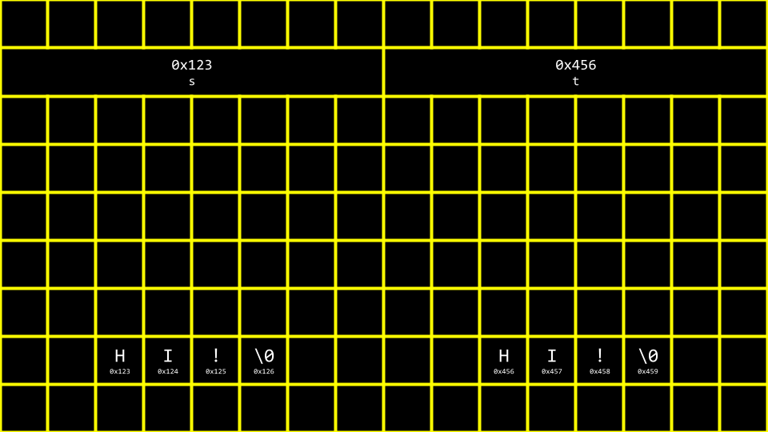
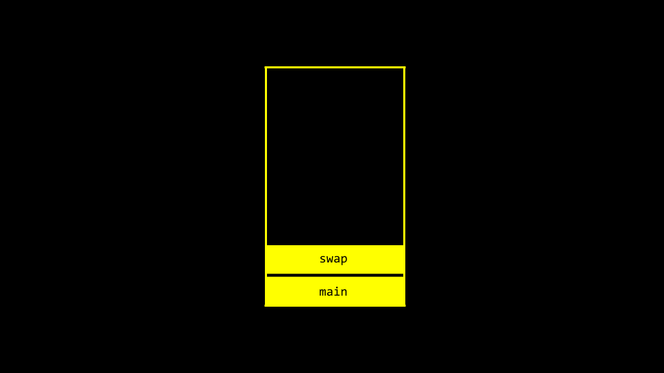

讲座 4
- 欢迎!
- Pixel Art
- Hexadecimal
- 内存
- 指针
- Strings
- Pointer Arithmetic
- String Comparison
- Copying and malloc
- Valgrind
- Garbage Values
- Pointer Fun with Binky
- Swapping
- Overflow
scanf- File I/O
- 总结
欢迎!
- In 上一页 周次, we talked 关于 images being made of smaller building blocks called pixels.
- Today, we will go into further detail关于 zeros and ones that make up these images. In particular, we will be going deeper into the fundamental building blocks that make up files, including images.
- Further, we will discuss how to access the underlying data stored in computer 内存.
- As we begin today, know that the concepts covered in this 讲座可能需要 some时间 to fully click.
Pixel Art
- Pixels are squares, individual dots, of color that are arranged on an up-down, left-right grid.
-
You can imagine an image as a map of bits, where zeros represent black and ones represent white.

Hexadecimal
-
RGB, or red, green, blue, are numbers that represent the amount of each of these colors. In Adobe Photoshop, you can see these settings as follows:

Notice how the amount of red, blue, and green changes the color selected.
- You can see from the image above that color is not just represented by three values. At the bottom of the window, there is a special value made up of numbers and characters.
255is represented asFF. Why might this be? -
Hexadecimal is a system of counting that has 16 counting values. They are as follows:
0 1 2 3 4 5 6 7 8 9 一份 B C D E F注意
Frepresents15. - Hexadecimal is also known as base-16.
- When counting in hexadecimal, each column is a power of 16.
- The number
0is represented as00. - The number
1is represented as01. - The number
9is represented by09. - The number
10is represented as0A. - The number
15is represented as0F. - The number
16is represented as10. - The number
255is represented asFF, because 16 x 15 (orF) is 240. Add 15 更多 to make 255. This is the highest number you can count using a two-digit hexadecimal system. - Hexadecimal is useful because it can be represented using fewer digits. Hexadecimal allows us to represent information 更多 succinctly.
内存
-
In周past, you 五月 recall our artist rendering of concurrent blocks of 内存. Applying hexadecimal numbering to each of these blocks of 内存, you can visualize these as follows:

-
You can imagine how there可能是 confusion regarding whether the
10block above 五月 represent a 地点 in 内存 or the value10. Accordingly, by convention, all hexadecimal numbers are often represented with the0xprefix as follows:
-
In your terminal window, type
code addresses.cand write your code as follows:// Prints an integer #include <stdio.h> int main(void) { int n = 50; printf("%i\n", n); }Notice how
nis stored in 内存 with the value50. -
You can visualize how this program stores this value as follows:

指针
-
The C language has two powerful operators that relate to 内存:
& Provides the address of something stored in memory. * Instructs the compiler to go to a location in memory. -
我们可以 leverage this knowledge by modifying our code as follows:
// Prints an integer's address #include <stdio.h> int main(void) { int n = 50; printf("%p\n", &n); }Notice the
%p, which allows us to view the address of a 地点 in 内存.&ncan be literally translated as “the address ofn.” Executing this code will return an address of 内存 beginning with0x. - 一份 pointer is a variable that stores the address of something. Most succinctly, a pointer is an address in your computer’s 内存.
-
考虑 following code:
int n = 50; int *p = &n;注意
pis a pointer that contains the address of an integern. -
Modify your code as follows:
// Stores and prints an integer's address #include <stdio.h> int main(void) { int n = 50; int *p = &n; printf("%p\n", p); }注意 this code has the same effect as our 上一页 code. We have simply leveraged our new knowledge of the
&and*operators. -
To illustrate the use of the
*operator, consider the following:// Stores and prints an integer via its address #include <stdio.h> int main(void) { int n = 50; int *p = &n; printf("%i\n", *p); }注意 the
printfline prints the integer at the 地点 ofp.int *pcreates a pointer whose job is to store the 内存 address of an integer. -
You can visualize our code as follows:

Notice the pointer seems rather large. Indeed, a pointer is usually stored as an 8-byte value.
pis storing the address of the50. -
You can 更多 accurately visualize a pointer as one address that points to another:

Strings
- Now that we have a mental model for 指针, we can peel 返回 a level of simplification that was offered earlier in 这门课程.
-
Modify your code as follows:
// Prints a string #include <cs50.h> #include <stdio.h> int main(void) { string s = "HI!"; printf("%s\n", s); }注意 a string
sis printed. -
回忆一下 a string is simply an array of characters. 例如,
string s = "HI!"can be represented as follows:
-
However, what is
sreally? Where is thesstored in 内存? As you can imagine,sneeds to be stored somewhere. You can visualize the relationship ofsto the string as follows:
Notice how a pointer called
stells the compiler where the first byte of the string exists in 内存. -
Modify your code as follows:
// Prints a string's address as well the addresses of its chars #include <cs50.h> #include <stdio.h> int main(void) { string s = "HI!"; printf("%p\n", s); printf("%p\n", &s[0]); printf("%p\n", &s[1]); printf("%p\n", &s[2]); printf("%p\n", &s[3]); }Notice the above prints the 内存 locations of each character in the string
s. The&symbol is used to show the address of each element of the string. When running this code, notice that elements0,1,2, and3are 下一页 to one another in 内存. -
Likewise, you can modify your code as follows:
// Declares a string with CS50 Library #include <cs50.h> #include <stdio.h> int main(void) { string s = "HI!"; printf("%s\n", s); }注意 this code will present the string that starts at the 地点 of
s. This code effectively removes the training wheels of thestringdata type offered bycs50.h. This is raw C code, without the scaffolding of the cs50 library. -
Taking off the training wheels, you can modify your code again:
// Declares a string without CS50 Library #include <stdio.h> int main(void) { char *s = "HI!"; printf("%s\n", s); }注意
cs50.his removed. 一份 string is implemented as achar *. - You can imagine how a string, as a data type, is created.
- Last 周, we learned how to create your own data type as a struct.
- The cs50 library includes a struct as follows:
typedef char *string - This struct, when using the cs50 library, allows one to use a custom data type called
string.
Pointer Arithmetic
- Pointer arithmetic is the ability to do math on locations of 内存.
-
You can modify your code to print out each 内存 地点 in the string as follows:
// Prints a string's chars #include <stdio.h> int main(void) { char *s = "HI!"; printf("%c\n", s[0]); printf("%c\n", s[1]); printf("%c\n", s[2]); }注意 we are printing each character at the 地点 of
s. -
此外，你可以 modify your code as follows:
// Prints a string's chars via pointer arithmetic #include <stdio.h> int main(void) { char *s = "HI!"; printf("%c\n", *s); printf("%c\n", *(s + 1)); printf("%c\n", *(s + 2)); }注意 the first character at the 地点 of
sis printed. Then, the character at the 地点s + 1is printed, and so on. -
Likewise, consider the following:
// Prints substrings via pointer arithmetic #include <stdio.h> int main(void) { char *s = "HI!"; printf("%s\n", s); printf("%s\n", s + 1); printf("%s\n", s + 2); }注意 this code prints the values stored at various 内存 locations starting with
s.
String Comparison
- 一份 string of characters is simply an array of characters identified by the 地点 of its first byte.
-
Earlier 在该课程中, we considered the comparison of integers. 我们可以 represent this in code by typing
code compare.cinto the terminal window as follows:// Compares two integers #include <cs50.h> #include <stdio.h> int main(void) { // Get two integers int i = get_int("i: "); int j = get_int("j: "); // Compare integers if (i == j) { printf("Same\n"); } else { printf("Different\n"); } }注意 this code takes two integers from the user and compares them.
- In the case of strings, however, one cannot compare two strings using the
==operator. - Utilizing the
==operator in an attempt to compare strings will attempt to compare the 内存 locations of the strings instead of the characters therein. Accordingly, we recommended the use ofstrcmp. -
To illustrate this, modify your code as follows:
// Compares two strings' addresses #include <cs50.h> #include <stdio.h> int main(void) { // Get two strings char *s = get_string("s: "); char *t = get_string("t: "); // Compare strings' addresses if (s == t) { printf("Same\n"); } else { printf("Different\n"); } }Noticing that typing in
HI!for both strings still results in the output ofDifferent. -
Why are these strings seemingly different? You can use the following to visualize why:

- Therefore, the code for
compare.cabove is actually attempting to see if the 内存 addresses are different, not the strings themselves. -
Using
strcmp, we can correct our code:// Compares two strings using strcmp #include <cs50.h> #include <stdio.h> #include <string.h> int main(void) { // Get two strings char *s = get_string("s: "); char *t = get_string("t: "); // Compare strings if (strcmp(s, t) == 0) { printf("Same\n"); } else { printf("Different\n"); } }注意
strcmpcan return0if the strings are the same. -
To further illustrate how these two strings are living in two locations, modify your code as follows:
// Prints two strings #include <cs50.h> #include <stdio.h> int main(void) { // Get two strings char *s = get_string("s: "); char *t = get_string("t: "); // Print strings printf("%s\n", s); printf("%s\n", t); }Notice how we now have two separate strings stored, likely at two separate locations.
-
You can see the locations of these two stored strings with a small modification:
// Prints two strings' addresses #include <cs50.h> #include <stdio.h> int main(void) { // Get two strings char *s = get_string("s: "); char *t = get_string("t: "); // Print strings' addresses printf("%p\n", s); printf("%p\n", t); }注意 the
%shas been changed to%pin the print statement.
Copying and malloc
- 一份 common need in 编程 is to copy one string to another.
-
In your terminal window, type
code copy.cand write code as follows:// Capitalizes a string #include <cs50.h> #include <ctype.h> #include <stdio.h> #include <string.h> int main(void) { // Get a string string s = get_string("s: "); // Copy string's address string t = s; // Capitalize first letter in string t[0] = toupper(t[0]); // Print string twice printf("s: %s\n", s); printf("t: %s\n", t); }注意
string t = scopies the address ofstot. This does not accomplish what we are desiring. The string is not copied – only the address is. Further, notice the inclusion ofctype.h. -
You can visualize the above code as follows:

注意
sandtare still pointing at the same blocks of 内存. This is not an authentic copy of a string. Instead, these are two 指针 pointing at the same string. -
Before we address this challenge, it’s important to ensure that we don’t experience a segmentation fault through our code, where we attempt to copy
string stostring t, wherestring tdoes not exist. 我们可以 employ thestrlenfunction as follows to assist with that:// Capitalizes a string, checking length first #include <cs50.h> #include <ctype.h> #include <stdio.h> #include <string.h> int main(void) { // Get a string string s = get_string("s: "); // Copy string's address string t = s; // Capitalize first letter in string if (strlen(t) > 0) { t[0] = toupper(t[0]); } // Print string twice printf("s: %s\n", s); printf("t: %s\n", t); }注意
strlenis used to make surestring texists. If it does not, nothing will be copied. -
To be able to make an authentic copy of the string, we will need to introduce two new building blocks. First,
mallocallows you, the programmer, to allocate a block of a specific size of 内存. Second,freeallows you to tell the compiler to free up that block of 内存 you previously allocated. -
我们可以 modify our code to 创建一个n authentic copy of our string as follows:
// Capitalizes a copy of a string #include <cs50.h> #include <ctype.h> #include <stdio.h> #include <stdlib.h> #include <string.h> int main(void) { // Get a string char *s = get_string("s: "); // Allocate memory for another string char *t = malloc(strlen(s) + 1); // Copy string into memory, including '\0' for (int i = 0; i <= strlen(s); i++) { t[i] = s[i]; } // Capitalize copy t[0] = toupper(t[0]); // Print strings printf("s: %s\n", s); printf("t: %s\n", t); }注意
malloc(strlen(s) + 1)creates a block of 内存 that is the length of the stringsplus one. This allows 的 inclusion of the null\0character in our final copied string. Then, theforloop walks through the stringsand assigns each value to that same 地点 on the stringt. -
事实证明 that our code is inefficient. Modify your code as follows:
// Capitalizes a copy of a string, defining n in loop too #include <cs50.h> #include <ctype.h> #include <stdio.h> #include <stdlib.h> #include <string.h> int main(void) { // Get a string char *s = get_string("s: "); // Allocate memory for another string char *t = malloc(strlen(s) + 1); // Copy string into memory, including '\0' for (int i = 0, n = strlen(s); i <= n; i++) { t[i] = s[i]; } // Capitalize copy t[0] = toupper(t[0]); // Print strings printf("s: %s\n", s); printf("t: %s\n", t); }注意
n = strlen(s)is defined now in the left-hand side of thefor loop. It’s best not to call unneeded functions in the middle condition of theforloop, as it will run over and over again. When movingn = strlen(s)to the left-hand side, the functionstrlenonly runs once. -
The
CLanguage has a built-in function to copy strings calledstrcpy. It can be implemented as follows:// Capitalizes a copy of a string using strcpy #include <cs50.h> #include <ctype.h> #include <stdio.h> #include <stdlib.h> #include <string.h> int main(void) { // Get a string char *s = get_string("s: "); // Allocate memory for another string char *t = malloc(strlen(s) + 1); // Copy string into memory strcpy(t, s); // Capitalize copy t[0] = toupper(t[0]); // Print strings printf("s: %s\n", s); printf("t: %s\n", t); }注意
strcpydoes the same work that ourforloop previously did. -
Both
get_stringandmallocreturnNULL, a special value in 内存, in the event that something goes wrong. You can write code that can check for thisNULLcondition as follows:// Capitalizes a copy of a string without memory errors #include <cs50.h> #include <ctype.h> #include <stdio.h> #include <stdlib.h> #include <string.h> int main(void) { // Get a string char *s = get_string("s: "); if (s == NULL) { return 1; } // Allocate memory for another string char *t = malloc(strlen(s) + 1); if (t == NULL) { return 1; } // Copy string into memory strcpy(t, s); // Capitalize copy if (strlen(t) > 0) { t[0] = toupper(t[0]); } // Print strings printf("s: %s\n", s); printf("t: %s\n", t); // Free memory free(t); return 0; }注意 if the string obtained is of length
0or malloc fails,NULLis returned. Further, notice thatfreelets the computer know you are done with this block of 内存 you created viamalloc.
Valgrind
-
Valgrind is a工具 can check to see if there are 内存-related issues with your programs wherein you utilized
malloc. Specifically, it checks to see if youfreeall the 内存 you allocated. -
考虑 following code for
memory.c:// 演示nstrates memory errors via valgrind #include <stdio.h> #include <stdlib.h> int main(void) { int *x = malloc(3 * sizeof(int)); x[1] = 72; x[2] = 73; x[3] = 33; }注意 running this program does not cause any errors. While
mallocis used to allocate enough 内存 for an array, the code fails tofreethat allocated 内存. - If you type
make memoryfollowed byvalgrind ./memory, you will get a report from valgrind that will report where 内存 has been lost as a result of your program. One error that valgrind reveals is that we attempted to assign the value of33at the 4th position of the array, where we only allocated an array of size3. Another error is that we never freedx. -
You can modify your code to free the 内存 of
xas follows:// 演示nstrates memory errors via valgrind #include <stdio.h> #include <stdlib.h> int main(void) { int *x = malloc(3 * sizeof(int)); x[1] = 72; x[2] = 73; x[3] = 33; free(x); }注意 running valgrind again now results in no 内存 leaks.
Garbage Values
- When you ask the compiler for a block of 内存, there is no guarantee that this 内存 will be empty.
-
It’s very possible that the 内存 you allocated was previously utilized by the computer. Accordingly, you 五月 see junk or garbage values. This is a result of you getting a block of 内存 but not initializing it. 例如, consider the following code for
garbage.c:#include <stdio.h> #include <stdlib.h> int main(void) { int scores[1024]; for (int i = 0; i < 1024; i++) { printf("%i\n", scores[i]); } }注意 running this code will allocate
1024locations in 内存 for your array, but theforloop will likely show that not all values therein are0. It’s always best practice to be aware of the potential for garbage values when you do not initialize blocks of 内存 to some other value like zero or otherwise.
Pointer Fun with Binky
- We watched a 视频 from Stanford University that helped us visualize and understand 指针.
Swapping
-
In the real世界， a common need in 编程 is to swap two values. Naturally, it’s hard to swap two variables without a temporary holding space. In practice, you can type
code swap.cand write code as follows to see this in action:// Fails to swap two integers #include <stdio.h> void swap(int a, int b); int main(void) { int x = 1; int y = 2; printf("x is %i, y is %i\n", x, y); swap(x, y); printf("x is %i, y is %i\n", x, y); } void swap(int a, int b) { int tmp = a; a = b; b = tmp; }注意 while this code runs, it does not work. The values, even after being sent to the
swapfunction, do not swap. Why? - When you pass values to a function, you are only providing copies. The scope of
xandyis limited to the main function as the code is presently written. That is, the values ofxandycreated in the curly{}braces of themainfunction only have the scope of themainfunction. In our code above,xandyare being passed by value. -
考虑 following image:

注意 global variables, which we have not used in 这门课程, live in one place in 内存. Various functions are stored in the
stackin another area of 内存. -
Now, consider the following image:

注意
mainandswaphave two separate frames or areas of 内存. Therefore, we cannot simply pass the values from one function to another to change them. -
Modify your code as follows:
// Swaps two integers using pointers #include <stdio.h> void swap(int *a, int *b); int main(void) { int x = 1; int y = 2; printf("x is %i, y is %i\n", x, y); swap(&x, &y); printf("x is %i, y is %i\n", x, y); } void swap(int *a, int *b) { int tmp = *a; *a = *b; *b = tmp; }注意 variables are not passed by value but by reference. That is, the addresses of
aandbare provided to the function. Therefore, theswapfunction can know where to make changes to the actualaandbfrom the main function. -
You can visualize this as follows:

Overflow
- 一份 heap overflow is when you overflow the heap, touching areas of 内存 you are not supposed to.
- 一份 stack overflow is when too many functions are called, overflowing the amount of 内存 avai实验le.
- Both of these are considered buffer overflows.
scanf
- In CS50, we have created functions like
get_intto simplify the act of getting input from the user. -
scanfis a built-in function that can get user input. -
我们可以 reimplement
get_intrather easily usingscanfas follows:// Gets an int from user using scanf #include <stdio.h> int main(void) { int n; printf("n: "); scanf("%i", &n); printf("n: %i\n", n); }注意 the value of
nis stored at the 地点 ofnin the linescanf("%i", &n). -
However, attempting to reimplement
get_stringis not easy. 考虑 following:// Dangerously gets a string from user using scanf with array #include <stdio.h> int main(void) { char s[4]; printf("s: "); scanf("%s", s); printf("s: %s\n", s); }注意 no
&is 必需 because strings are special. Still, this program will not function correctly every时间 it is run. Nowhere in this program do we allocate the amount of 内存必需的 our string. Indeed, we don’t know how long of a string可能是 inputted by the user! Further, we don’t know what garbage values 五月 exist at the 内存 地点. -
Further, your code could be modified as follows. However, we have to pre-allocate a certain amount of 内存 for a string:
// Using malloc #include <stdio.h> #include <stdlib.h> int main(void) { char *s = malloc(4); if (s == NULL) { return 1; } printf("s: "); scanf("%s", s); printf("s: %s\n", s); free(s); return 0; }注意 if a string that is four bytes is provided you might get an error.
-
Simplifying our code as follows, we can further understand this essential problem of pre-allocation:
#include <stdio.h> int main(void) { char s[4]; printf("s: "); scanf("%s", s); printf("s: %s\n", s); }注意 if we pre-allocate an array of size
4, we can typecatand the program functions. However, a string larger than this could 创建一个n error. - Sometimes, the compiler or the system running it 五月 allocate 更多 内存 than we indicate. Fundamentally, though, the above code is unsafe. 我们可以not trust that the user will input a string that fits into our pre-allocated 内存.
File I/O
-
You can 阅读 from and manipulate files. While this topic will be discussed further in a future 周, consider the following code for
phonebook.c:// Saves names and numbers to a CSV file #include <cs50.h> #include <stdio.h> #include <string.h> int main(void) { // Open CSV file FILE *file = fopen("phonebook.csv", "a"); // Get name and number char *name = get_string("Name: "); char *number = get_string("Number: "); // Print to file fprintf(file, "%s,%s\n", name, number); // Close file fclose(file); }注意 this code uses 指针 to access the file.
- You can create 名为
phonebook.csvin advance of running the above code or 下载 phonebook.csv. After running the above program and inputting a名字 and phone number, you will notice that this data persists in your CSV file. -
If we want to ensure that
phonebook.csvexists prior to running the program, we can modify our code as follows:// Saves names and numbers to a CSV file #include <cs50.h> #include <stdio.h> #include <string.h> int main(void) { // Open CSV file FILE *file = fopen("phonebook.csv", "a"); if (!file) { return 1; } // Get name and number char *name = get_string("Name: "); char *number = get_string("Number: "); // Print to file fprintf(file, "%s,%s\n", name, number); // Close file fclose(file); }注意 this program protects against a
NULLpointer by invoking返回 1. -
我们可以 implement our own copy program by typing
code cp.cand writing code as follows:// Copies a file #include <stdio.h> #include <stdint.h> typedef uint8_t BYTE; int main(int argc, char *argv[]) { FILE *src = fopen(argv[1], "rb"); FILE *dst = fopen(argv[2], "wb"); BYTE b; while (fread(&b, sizeof(b), 1, src) != 0) { fwrite(&b, sizeof(b), 1, dst); } fclose(dst); fclose(src); }注意 this file creates our own data type called a BYTE , which is the size of a uint8_t. Then, the file reads a
BYTEand writes it to a file. - BMPs are also assortments of data that we can examine and manipulate. This 周, you will be doing just that in your 问题集!
总结
在这节课中, you learned 关于 指针 that provide you with the ability to access and manipulate data at specific 内存 locations. Specifically, we delved into…
- Pixel art
- Hexadecimal
- 内存
- 指针
- Strings
- Pointer Arithmetic
- String Comparison
- Copying
- malloc and Valgrind
- Garbage values
- Swapping
- Overflow
scanf- File I/O
See you 下一页 时间!